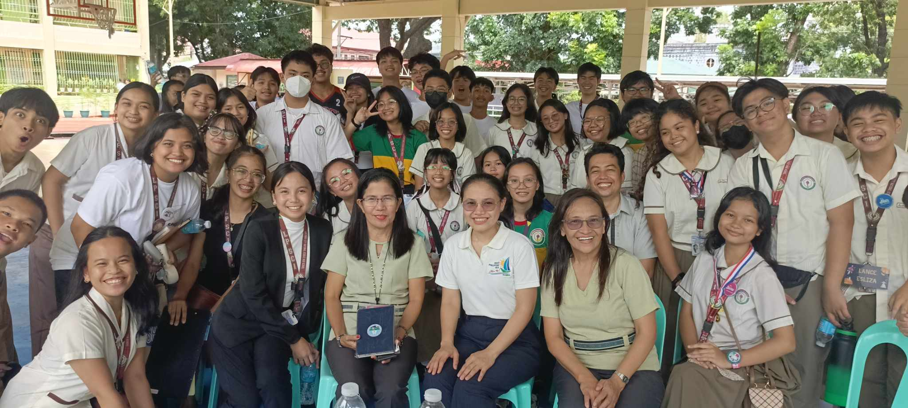

That's me right there! You'll see more of that face once you scroll on this page. Don't be fooled though, that smile as been ruined by studying at a Science Highschool, just kidding.
This is a picture of our section celebrating as we all got 100/100 in our Science Performance Task! Every effort counted and the picture was taken by RJ Dancal.
This is a picture during a Sunny Saturday where the Coro Lapisciano members practiced for the upcoming mass and Buwan ng Wika performance. Picture taken by Chanel Bautista.
A picture taken by RJ Dancal during the LPSci's Foundation Day parade of sections.
A picture taken by a photographer of Coro Lapisciano members after the Mass during the Foundation Day.
A photo taken by RJ Dancal after we all tied our scores in our Filipino Debate, well, except for one team.
Taken by RJ Dancal, it is another class picture after the gruesome First Periodical Exams.

Taken by another participant, this is a picture opportunity taken shortly after the end of the MANA MO seminar.
It was a week long of suspensions and we had to answer a really difficult TOFAS.
Taken by Ms. Gia Apolona, this is a video of us doing our warm-ups before we start practicing the mass songs.
First of all, I would like to thank you, Ms. Uminga, for dedicating the time and effort into teaching us the lessons that we have during this grade. Throughout this quarter, I have faced many ups and downs. More failures have happened than victories but in the end, I remind myself that these are all part of learning. If it doesn't work out for me this quarter, then I'd just have to do better in the next one even if I'm not confident enough. As I am writing this now, I have a determination improve myself more and a growing interest to code more. I am confident that with your help and with the help of my peers, I can achieve them. That is all, thank you for viewing my webpage!